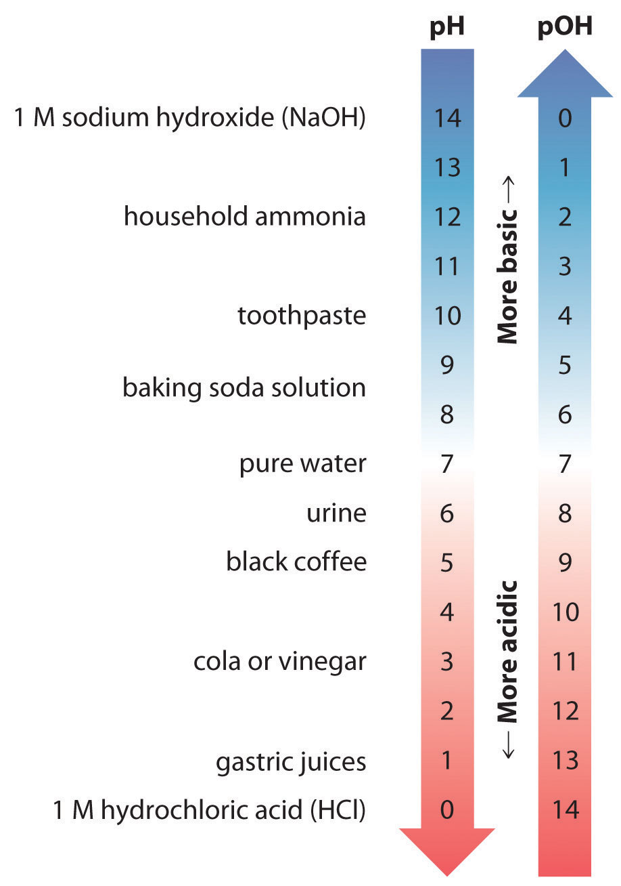

As you learned in Chapter 4 "Reactions in Aqueous Solution" and Chapter 8 "Ionic versus Covalent Bonding", acids and bases can be defined in several different ways (Table 16.1 "Definitions of Acids and Bases"). Recall that the Arrhenius definition of an acid is a substance that dissociates in water to produce H+ ions (protons), and an Arrhenius base is a substance that dissociates in water to produce OH− (hydroxide) ions. According to this view, an acid–base reaction involves the reaction of a proton with a hydroxide ion to form water. Although Brønsted and Lowry defined an acid similarly to Arrhenius by describing an acid as any substance that can donate a proton, the Brønsted–Lowry definition of a base is much more general than the Arrhenius definition. In Brønsted–Lowry terms, a base is any substance that can accept a proton, so a base is not limited to just a hydroxide ion. This means that for every Brønsted–Lowry acid, there exists a corresponding conjugate base with one fewer proton, as we demonstrated in Chapter 4 "Reactions in Aqueous Solution". Consequently, all Brønsted–Lowry acid–base reactions actually involve two conjugate acid–base pairs and the transfer of a proton from one substance (the acid) to another (the base). In contrast, the Lewis definition of acids and bases, discussed in Chapter 8 "Ionic versus Covalent Bonding", focuses on accepting or donating pairs of electrons rather than protons. A Lewis base is an electron-pair donor, and a Lewis acid is an electron-pair acceptor.
Table 16.1 Definitions of Acids and Bases
| Acids | Bases | |
|---|---|---|
| Arrhenius | H+ donor | OH− donor |
| Brønsted–Lowry | H+ donor | H+ acceptor |
| Lewis | electron-pair acceptor | electron-pair donor |
Because this chapter deals with acid–base equilibriums in aqueous solution, our discussion will use primarily the Brønsted–Lowry definitions and nomenclature. Remember, however, that all three definitions are just different ways of looking at the same kind of reaction: a proton is an acid, and the hydroxide ion is a base—no matter which definition you use. In practice, chemists tend to use whichever definition is most helpful to make a particular point or understand a given system. If, for example, we refer to a base as having one or more lone pairs of electrons that can accept a proton, we are simply combining the Lewis and Brønsted–Lowry definitions to emphasize the characteristic properties of a base.
In Chapter 4 "Reactions in Aqueous Solution", we also introduced the acid–base properties of water, its autoionization reaction, and the definition of pH. The purpose of this section is to review those concepts and describe them using the concepts of chemical equilibrium developed in Chapter 15 "Chemical Equilibrium".
The structure of the water molecule, with its polar O–H bonds and two lone pairs of electrons on the oxygen atom, was described in Chapter 4 "Reactions in Aqueous Solution" and Chapter 8 "Ionic versus Covalent Bonding", and the structure of liquid water was discussed in Chapter 13 "Solutions". Recall that because of its highly polar structure, liquid water can act as either an acid (by donating a proton to a base) or a base (by using a lone pair of electrons to accept a proton). For example, when a strong acid such as HCl dissolves in water, it dissociates into chloride ions (Cl−) and protons (H+). As you learned in Chapter 4 "Reactions in Aqueous Solution", the proton, in turn, reacts with a water molecule to form the hydronium ion (H3O+):
Equation 16.1
In this reaction, HCl is the acid, and water acts as a base by accepting an H+ ion. The reaction in Equation 16.1 is often written in a simpler form by removing H2O from each side:
Equation 16.2
HCl(aq) → H+(aq) + Cl−(aq)In Equation 16.2, the hydronium ion is represented by H+, although free H+ ions do not exist in liquid water.
Water can also act as an acid, as shown in Equation 16.3. In this equilibrium reaction, H2O donates a proton to NH3, which acts as a base:
Equation 16.3
Thus water is amphiproticSubstances that can behave as either an acid or a base in a chemical reaction, depending on the nature of the other reactant(s)., meaning that it can behave as either an acid or a base, depending on the nature of the other reactant. Notice that Equation 16.3 is an equilibrium reaction as indicated by the double arrow.
Because water is amphiprotic, one water molecule can react with another to form an OH− ion and an H3O+ ion in an autoionization process:
Equation 16.4
The equilibrium constant K for this reaction can be written as follows:
Equation 16.5
When pure liquid water is in equilibrium with hydronium and hydroxide ions at 25°C, the concentrations of the hydronium ion and the hydroxide ion are equal: [H3O+] = [OH−] = 1.003 × 10−7 M. Thus the number of dissociated water molecules is very small indeed, approximately 2 ppb. We can calculate [H2O] at 25°C from the density of water at this temperature (0.997 g/mL):
Equation 16.6
With so few water molecules dissociated, the equilibrium of the autoionization reaction (Equation 16.4) lies far to the left. Consequently, [H2O] is essentially unchanged by the autoionization reaction and can be treated as a constant. Incorporating this constant into the equilibrium expression allows us to rearrange Equation 16.5 to define a new equilibrium constant, the ion-product constant of liquid water (Kw)An equilibrium constant for the autoionization of water, ⇌ + in which the concentration of water is treated as a constant: = = :
Equation 16.7
Substituting the values for [H3O+] and [OH−] at 25°C into this expression,
Equation 16.8
Thus, to three significant figures, Kw = 1.01 × 10−14 M. Like any other equilibrium constant, Kw varies with temperature, ranging from 1.15 × 10−15 at 0°C to 4.99 × 10−13 at 100°C.
In pure water, the concentrations of the hydronium ion and the hydroxide ion are equal, and the solution is therefore neutral. If [H3O+] > [OH−], however, the solution is acidic, whereas if [H3O+] < [OH−], the solution is basic. For an aqueous solution, the H3O+ concentration is a quantitative measure of acidity: the higher the H3O+ concentration, the more acidic the solution. Conversely, the higher the OH− concentration, the more basic the solution. In most situations that you will encounter, the H3O+ and OH− concentrations from the dissociation of water are so small (1.003 × 10−7 M) that they can be ignored in calculating the H3O+ or OH− concentrations of solutions of acids and bases, but this is not always the case.
The pH scale is a concise way of describing the H3O+ concentration and hence the acidity or basicity of a solution. Recall from Chapter 4 "Reactions in Aqueous Solution" that pH and the H+ (H3O+) concentration are related as follows:
Equation 16.9
Equation 16.10
Because the scale is logarithmic, a pH difference of 1 between two solutions corresponds to a difference of a factor of 10 in their hydronium ion concentrations. (Refer to Essential Skills 3 in Chapter 4 "Reactions in Aqueous Solution", Section 4.10 "Essential Skills 3", if you need to refresh your memory about how to use logarithms.) Recall also that the pH of a neutral solution is 7.00 ([H3O+] = 1.0 × 10−7 M), whereas acidic solutions have pH < 7.00 (corresponding to [H3O+] > 1.0 × 10−7) and basic solutions have pH > 7.00 (corresponding to [H3O+] < 1.0 × 10−7).
Similar notation systems are used to describe many other chemical quantities that contain a large negative exponent. For example, chemists use an analogous pOH scale to describe the hydroxide ion concentration of a solution. The pOH and [OH−] are related as follows:
Equation 16.11
Equation 16.12
The constant Kw can also be expressed using this notation, where pKw = −log Kw.
Because a neutral solution has [OH−] = 1.0 × 10−7, the pOH of a neutral solution is 7.00. Consequently, the sum of the pH and the pOH for a neutral solution at 25°C is 7.00 + 7.00 = 14.00. We can show that the sum of pH and pOH is equal to 14.00 for any aqueous solution at 25°C by taking the negative logarithm of both sides of Equation 16.7:
Equation 16.13
Thus at any temperature, pH + pOH = pKw, so at 25°C, where Kw = 1.0 × 10−14, pH + pOH = 14.00. More generally, the pH of any neutral solution is half of the pKw at that temperature. The relationship among pH, pOH, and the acidity or basicity of a solution is summarized graphically in Figure 16.1 "The Inverse Relationship between the pH and pOH Scales" over the common pH range of 0 to 14. Notice the inverse relationship between the pH and pOH scales.
For any neutral solution, pH + pOH = 14.00 (at 25°C) and
Figure 16.1 The Inverse Relationship between the pH and pOH Scales
As pH decreases, [H+] and the acidity increase. As pOH increases, [OH−] and the basicity decrease. Common substances have pH values that range from extremely acidic to extremely basic.
The Kw for water at 100°C is 4.99 × 10−13. Calculate pKw for water at this temperature and the pH and the pOH for a neutral aqueous solution at 100°C. Report pH and pOH values to two decimal places.
Given: K w
Asked for: pKw, pH, and pOH
Strategy:
A Calculate pKw by taking the negative logarithm of Kw.
B For a neutral aqueous solution, [H3O+] = [OH−]. Use this relationship and Equation 16.7 to calculate [H3O+] and [OH−]. Then determine the pH and the pOH for the solution.
Solution:
A Because pKw is the negative logarithm of Kw, we can write
pKw = −log Kw = −log(4.99 × 10−13) = 12.302The answer is reasonable: Kw is between 10−13 and 10−12, so pKw must be between 12 and 13.
B Equation 16.7 shows that Kw = [H3O+][OH−]. Because [H3O+] = [OH−] in a neutral solution, we can let x = [H3O+] = [OH−]:
Because x is equal to both [H3O+] and [OH−],
pH = pOH = −log(7.06 × 10−7) = 6.15 (to two decimal places)We could obtain the same answer more easily (without using logarithms) by using the pKw. In this case, we know that pKw = 12.302, and from Equation 16.13, we know that pKw = pH + pOH. Because pH = pOH in a neutral solution, we can use Equation 16.13 directly, setting pH = pOH = y. Solving to two decimal places we obtain the following:
Exercise
Humans maintain an internal temperature of about 37°C. At this temperature, Kw = 3.55 × 10−14. Calculate pKw and the pH and the pOH of a neutral solution at 37°C. Report pH and pOH values to two decimal places.
Answer: pKw = 13.45 pH = pOH = 6.73
Water is amphiprotic: it can act as an acid by donating a proton to a base to form the hydroxide ion, or as a base by accepting a proton from an acid to form the hydronium ion (H3O+). The autoionization of liquid water produces OH− and H3O+ ions. The equilibrium constant for this reaction is called the ion-product constant of liquid water (Kw) and is defined as Kw = [H3O+][OH−]. At 25°C, Kw is 1.01 × 10−14; hence pH + pOH = pKw = 14.00.
Ion-product constant of liquid water
Equation 16.7: Kw = [H3O+][OH−]
Definition of pH
Equation 16.9: pH = −log10[H+]
Equation 16.10: [H+] = 10−pH
Definition of pOH
Equation 16.11: pOH = −log10[OH+]
Equation 16.12: [OH−] = 10−pOH
Relationship among pH, pOH, and p K w
Equation 16.13: pKw= pH + pOH
What is the relationship between the value of the equilibrium constant for the autoionization of liquid water and the tabulated value of the ion-product constant of liquid water (Kw)?
The density of liquid water decreases as the temperature increases from 25°C to 50°C. Will this effect cause Kw to increase or decrease? Why?
Show that water is amphiprotic by writing balanced chemical equations for the reactions of water with HNO3 and NH3. In which reaction does water act as the acid? In which does it act as the base?
Write a chemical equation for each of the following.
Show that K for the sum of the following reactions is equal to Kw.
Kauto = [H3O+][OH−]/[H2O]2 Kw = [H3O+][OH−] = Kauto[H2O]2
The autoionization of sulfuric acid can be described by the following chemical equation:
At 25°C, K = 3 × 10−4. Write an equilibrium constant expression for that is analogous to Kw. The density of H2SO4 is 1.8 g/cm3 at 25°C. What is the concentration of H3SO4+? What fraction of H2SO4 is ionized?
An aqueous solution of a substance is found to have [H3O]+ = 2.48 × 10−8 M. Is the solution acidic, neutral, or basic?
The pH of a solution is 5.63. What is its pOH? What is the [OH−]? Is the solution acidic or basic?
State whether each solution is acidic, neutral, or basic.
Calculate the pH and the pOH of each solution.
Calculate the pH and the pOH of each solution.
The pH of stomach acid is approximately 1.5. What is the [H+]?
Given the pH values in parentheses, what is the [H+] of each solution?
A reaction requires the addition of 250.0 mL of a solution with a pH of 3.50. What mass of HCl (in milligrams) must be dissolved in 250 mL of water to produce a solution with this pH?
If you require 333 mL of a pH 12.50 solution, how would you prepare it using a 0.500 M sodium hydroxide stock solution?
[H3SO4+] = 0.3 M; the fraction ionized is 0.02.
pOH = 8.37; [OH−] = 4.3 × 10−9 M; acidic
2.9 mg HCl